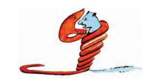
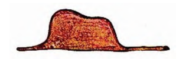
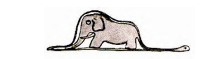

Mon premier dessin
📄 Texte : Mon premier dessin
Les enfants doués dans les domaines artistiques, littéraires ou autres sont-ils toujours encouragés par les adultes ? Lisez le texte suivant et vous aurez des éléments de réponse à cette question.
Lorsque j'avais six ans j'ai vu, une fois, une magnifique image, dans un livre sur la Forêt Vierge qui s'appelait « Histoires Vécues ». Ça représentait un serpent boa qui avalait un fauve. Voilà la copie du dessin.

On disait dans le livre : « Les serpents boas avalent leur proie tout entière, sans la mâcher. Ensuite ils ne peuvent plus bouger et ils dorment pendant les six mois de leur digestion ».
J'ai alors beaucoup réfléchi sur les aventures de la jungle et, à mon tour, j'ai réussi, avec un crayon de couleur, à tracer mon premier dessin. Mon dessin numéro 1. Il était comme ça :

J'ai montré mon chef-d'œuvre aux grandes personnes et je leur ai demandé si mon dessin leur faisait peur. Elles m'ont répondu : - Pourquoi un chapeau ferait-il peur ?
Mon dessin ne représentait pas un chapeau. Il représentait un serpent boa qui digérait un éléphant. J'ai alors dessiné l'intérieur du serpent boa, afin que les grandes personnes puissent comprendre. Elles ont toujours besoin d'explications. Mon dessin numéro 2 était comme ça :

Les grandes personnes m'ont conseillé de laisser de côté les dessins de serpents boas ouverts ou fermés, et de m'intéresser plutôt à la géographie, à l'histoire, au calcul et à la grammaire. C'est ainsi que j'ai abandonné, à l'âge de six ans, une magnifique carrière de peintre.
J'avais été découragé par l'insuccès de mon dessin numéro 1 et de mon dessin numéro 2. Les grandes personnes ne comprennent jamais rien toutes seules, et c'est fatigant, pour les enfants, de toujours leur donner des explications.
Vocabulaire :
1- Le lion, le tigre et la panthère sont des fauves.
2- La transformation des aliments dans l'estomac avant leur assimilation.
3- L'échec.
🔍 Nous analysons le texte
1. En quoi la lecture du livre sur la Forêt Vierge a-t-elle marqué le narrateur ?
2. Quels sont les deux dessins qu'il a réalisés ? Que représentent-ils selon lui ?
3. Quelle réaction espérait-il provoquer en montrant son premier dessin aux « grandes personnes » ?
4. Dans quel but l'enfant a-t-il exécuté son deuxième dessin ?
5. Quelle a été la réaction des adultes quand il le leur a montré ?
6. De quoi cet enfant paraît-il accuser les adultes ?
💬 Nous apprécions le texte
Selon vous, la fin du texte est-elle triste ou amusante ? Pourquoi ?
✍️ Nous enrichissons notre vocabulaire
1. « Compréhensif » ou « Compréhensible » ?
Choisissez le mot qui convient dans chaque phrase.
2. Complétez avec « du génie », « du talent », « des dons »
Choisissez l'expression correcte.
a) Ma cousine a .
b) Mon camarade a de poète.
c) Ce pianiste a vraiment .
3. Trouvez les adjectifs correspondants et employez-les
Trouvez l'adjectif correspondant à chaque nom, puis utilisez-le dans une phrase.
a) Le génie →
Phrase :
b) Le talent →
Phrase :
📚 Nous complétons notre lecture
- Le Petit Prince a été publié pour la première fois à New York en 1943.
- C'est l'auteur lui-même qui l'a illustré.
- Il existe plus de 160 traductions du Petit Prince.
- Il y a plusieurs adaptations de ce conte (Film soviétique en 1966, film américain en 1974, téléfilm allemand en 1990, dessins animés japonais en 1978, dessins animés américains en 1979, comédie musicale en 2002, opéra en 2003 ...).